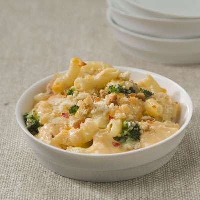

Spicy Mac and Cheese with Broccoli

Spicy Mac and Cheese with Broccoli
Spice things up with this delicious spicy macaroni and cheese recipe. It's simple and easy on the wallet.
Ingredients:
- 8oz Large elbow macaroni
- 12-16oz Broccoli
- 8oz Shredded sharp cheddar
- 8oz Shredded pepperjack (slices work, just cut them into smaller pieces)
- 12oz Evaporated Milk
- 2oz Shredded Parmasean
- 3tbsn Bread crumbs
- 1tspn Black pepper
Steps:
- Preheat oven to 350°F. Lightly grease casserole dish/pan
- Boil pasta to desired tenderness, add broccoli for last 3 minutes or boil separately
- Combine pasta, cheddar, pepperjack, 1oz of parmasean,
broccoli, and evaporated milk and stir in caserole dish/pan
- Cover dish with foil and bake for 20 minutes
- Uncover, stir, and sprinkle with remaining parmasean, black pepper, and bread crumbs,
bake for 10 more minutes and serve.